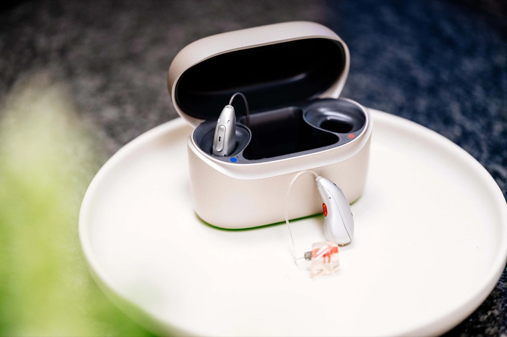

Hörgeräte in Rösrath — Ihr bestes Sprachverstehen mit der Hoffnungsohr-Target Anpassung
Ihr bestes Sprachverstehen — in jeder Situation.
Beim Hoffnungsohr in Rösrath erhalten Sie moderne Hörgeräte führender Hersteller — individuell angepasst mit unserer einzigartigen Hoffnungsohr-Target.
Diese Anpassungstechnik stellt sicher, dass Ihr Hörgerät nicht nur technisch korrekt eingestellt ist, sondern perfekt zu Ihrer persönlichen Hörsituation, Ihrem Alltag und Ihrer Umgebung passt.
Das Ergebnis: ein natürlicheres Hörerlebnis von Anfang an.
Unser Alleinstellungsmerkmal
Was ist die Hoffnungsohr-Target Anpassung?
Die meisten Hörgeräte werden auf Basis des Audiogramms allein eingestellt — also nach dem Ergebnis des Hörtests. Das ist der Industriestandard und funktioniert als Ausgangspunkt. Aber es reicht nicht.
Warum? Weil jeder Gehörgang anders ist. Schon kleine Unterschiede in Form, Länge und Resonanzverhalten des Gehörgangs verändern, wie Schall Ihr Trommelfell erreicht. Ein Hörgerät, das nach Durchschnittswerten eingestellt ist, klingt für viele Menschen zu hell, zu dumpf, zu laut in ruhigen Momenten — oder zu leise, wenn es darauf ankommt.
Das Problem: Hörgeräte nach Standard — nicht nach Ihrem Ohr
Bei Kettenakustikern mit Zeitdruck und standardisierten Abläufen bleibt oft keine Zeit für das, was wirklich den Unterschied macht: eine präzise Überprüfung direkt im Ohr. Das Ergebnis: Kunden tragen das Hörgerät schließlich nicht mehr, weil es sich „unnatürlich" anfühlt — oder weil sie in Gruppen immer noch schlecht verstehen.
Die Lösung: In-Situ-Messung & individuelle Zielkurve
Die Hoffnungsohr-Target Anpassung ergänzt das Audiogramm um eine Real-Ear-Messung (auch: Insitu-Audiometrie): Mit einem hauchdünnen Mikrofonsonde im Gehörgang messen wir, wie das Hörgerät den Schall tatsächlich an Ihr Trommelfell liefert — nicht wie es theoretisch sollte, sondern wie es bei Ihnen wirklich ankommt.
Auf Basis dieser Messung erstellen wir eine individuelle Target-Kurve: die genaue Verstärkung, die Ihr Gehör braucht, um Sprache, Musik und Umgebungsgeräusche natürlich und ausgewogen wahrzunehmen. Diese Kurve ist bei jedem Menschen anders.
Der Ablauf in 5 Schritten
Ausführlicher Hörtest
Tonschwellenaudiometrie und Sprachaudiometrie — wir messen nicht nur, was Sie hören, sondern wie gut Sie Sprache in Ruhe und in Lärm verstehen.
Real-Ear-Messung
Mit einer Sondenmessung im Gehörgang erfassen wir die individuelle Schallcharakteristik Ihres Ohres — der Schlüssel zu natürlichem Klang.
Individuelle Zielkurve
Wir berechnen Ihre persönliche Hoffnungsohr-Target-Kurve und passen das Hörgerät exakt darauf an — kein Durchschnitt, sondern Ihr Ohr.
Alltagserprobung: 21 Tage
Sie tragen das Hörgerät in Ihrem echten Alltag. Wir justieren gezielt nach — so oft wie nötig, bis es perfekt sitzt und klingt.
Langfristige Nachsorge
Ihr Gehör verändert sich. Wir passen Ihr Hörgerät regelmäßig nach — ein Service, den wir als inhabergeführter Betrieb persönlich leisten.
Das Ergebnis: Ein Hörgerät, das sich von Anfang an natürlich anfühlt. Kein Übersteuern in lauten Räumen, kein Dumpfheit im ruhigen Gespräch. Sie hören — ohne dass Sie ständig daran denken müssen, dass Sie ein Hörgerät tragen.

Ihr bestes Sprachverstehen
Mit Hörgeräten können Sie Gesprächen wieder entspannter folgen, auch in geräuschvoller Umgebung. Musik ist wieder in ihrer gesamten Klangbreite erlebbar.
Wenig zu verstehen ist anstrengend für Körper und Geist. Ein individuell angepasstes Hörgerät sorgt für ein besseres Allgemeinbefinden und unterstützt die räumliche Orientierung.

Mehr Freude
Mit einer passenden Hörlösung nehmen Sie am sozialen Leben wieder uneingeschränkt teil. Sorglos mit Freunden und Familie sprechen zu können, macht glücklich. Leichter beim TV-Schauen alles zu verstehen, macht die Zeit auch deutlich entspannter.
Mehr Erfolg
Wer mehr hört, versteht weniger falsch — im Alltag wie im Berufsleben. Das schafft Verhandlungssicherheit und sorgt für mehr Selbstvertrauen. Sich auf sein Gehör wieder verlassen zu können, mindert Stress und verhindert Fehler.
Moderne Hörgeräte vom Hoffnungsohr reduzieren Störgeräusche auf ein Minimum und ermöglichen so auch wieder angenehmes Arbeiten in geräuschvoller Umgebung.
Welche Hörgeräte-Bauformen gibt es?
Bei den Hörgeräte-Bauformen unterscheidet man vorrangig zwischen Hinter-dem-Ohr-Hörgeräten (HdO) und In-dem-Ohr-Hörgeräten (IdO).

Hinter-dem-Ohr-Hörgeräte
Hinter der Ohrmuschel sitzt ein kleiner, unauffälliger Empfänger mit Mikrofonen und Batterie. Die Schallausgabe befindet sich direkt im Gehörgang.
Die Verbindung erfolgt entweder mit einem dünnen, transparenten Schlauch oder mit einem transparenten Kabel. Durch diese Bauweise verbinden HdO-Hörgeräte den größtmöglichen Funktionsumfang mit einer unauffälligen Optik.
HdO-Hörgeräte sind für nahezu jede Art von Schwerhörigkeit erhältlich — auch für hochgradige Hörprobleme. Je nach Preisklasse ist eine Verbindung über Bluetooth mit Smartphone oder TV möglich.

Im-Ohr-Hörgeräte
Die gesamte Technik verschwindet im Gehörgang — besonders unauffällig und unempfindlich gegen Berührungen durch Kleidung oder Kopfbedeckungen.
IdO-Hörgeräte können kaum verrutschen oder unbeabsichtigt aus dem Ohr fallen, sodass sie gut beim Sport und in der Freizeit getragen werden können. Sie gibt es als individuelle Maßanfertigung mit Batterie oder Akku in unterschiedlichen Größen.
Eine Alternative sind Instant-Im-Ohr-Hörgeräte: ebenfalls sehr klein, jedoch von der Bauform immer gleich groß. Bluetooth-Verbindungen sind im IdO-Bereich meist nur bei größeren oder teureren Modellen möglich.
Für Kinder & Jugendliche
Hörgeräte für junge Menschen ab 11 Jahren
Beim Hoffnungsohr versorgen wir nicht nur Erwachsene, sondern auch Kinder und Jugendliche ab 11 Jahren mit modernen Hörsystemen. Gutes Hören ist in dieser Lebensphase besonders wichtig — für die Schule, für Freundschaften, für Sport und Hobbys. Eine gut angepasste Hörlösung nimmt die Anstrengung des „Mithörens" weg und gibt jungen Menschen die Sicherheit, überall mühelos dabei zu sein.
Eine Versorgung in jungen Jahren braucht vor allem Zeit und Geduld — die nehmen wir uns. Mit unserer Hoffnungsohr-Target Anpassung stellen wir das Hörgerät exakt auf das individuelle Gehör ein, und moderne Geräte sind heute klein, unauffällig und per Bluetooth direkt mit Smartphone und Tablet verbunden.
Transparent — was kostet mich ein Hörgerät?
Von der Nulltarif-Versorgung bis zum Premium-Hörsystem — die genauen Preise besprechen wir derzeit persönlich mit Ihnen.
- Volldigitales Markenhörgerät
- Hoffnungsohr-Target Anpassung
- Automatische Umgebungserkennung
- Geräuschunterdrückung
- Service & Nachsorge inklusive
Gegen Vorlage einer ärztlichen Verordnung. Details im persönlichen Gespräch.
- Automatisches Sprachverstehen
- Bluetooth-Streaming
- Geräuschunterdrückung
- Hoffnungsohr-Target Anpassung
- Service & Nachsorge inklusive
Aufzahlung zzgl. zur Kassenleistung. Konkrete Beratung im persönlichen Gespräch.
- Automatisches Sprachverstehen
- Bluetooth-Streaming
- Akku-Technologie
- Geräuschunterdrückung
- Hoffnungsohr-Target Anpassung
- Service & Nachsorge inklusive
Aufzahlung zzgl. zur Kassenleistung. Konkrete Beratung im persönlichen Gespräch.
- Automatisches Sprachverstehen
- Bluetooth-Streaming
- Akku-Technologie
- KI-gestützte Lärmdämpfung
- Hoffnungsohr-Target Anpassung
- Service & Nachsorge inklusive
Aufzahlung zzgl. zur Kassenleistung. Konkrete Beratung im persönlichen Gespräch.
- KI-gestützte Lärmdämpfung
- Bestes Sprachverstehen in Lärm
- Bluetooth-Streaming
- Akku-Technologie
- KI-Unterstützung in lauten Umgebungen
- Hoffnungsohr-Target Anpassung
Aufzahlung zzgl. zur Kassenleistung. Konkrete Beratung im persönlichen Gespräch.
Der genaue Eigenanteil hängt von Ihrer Krankenkasse und dem gewählten Modell ab — wir beraten Sie gern persönlich. Mehr zur Kostenübernahme →